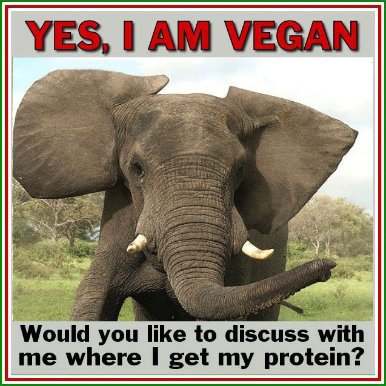

SKIP TO ARTICLE
- You
- Edit Profile
- News Feed
- Events
- Shops
- Saved
- Buy and Sell Groups
- Tufts Class of 2019
- Anti-Vegan Coalition
- Debate Team 2016-17
- Discover Groups
- Create Group
- Close Friends
- Live Video
- Games
- Messages
- Photos
- 8 event invites
- Anthony Monaco
TRENDING
- Tufts Observer
15K people talking about this - Roots/Routes
7K people talking about this - Clowns
120K people talking about this
Tufts Observer Multimedia · October 10, 2016
Design: Gabby Bonfiglio · Aaron Watts · Jade Chan
Development: Danielle Kong · Kayden Mimmack
Design: Gabby Bonfiglio · Aaron Watts · Jade Chan
Development: Danielle Kong · Kayden Mimmack

3 mins
Hi all! I'll be in the Campus Center today getting signatures for a petition surrounding my new effort: A Resolution to Abolish Meat in Tufts Dining Halls. I think veganism is the only sustainable choice for our planet. Come stop by and add your signatures!
Like
Comment
You
Hi! So I'm thinking about how veganism actually erases the cultures of people of color of which cooking/eating meat is a big part.
The Aggressor
Dude, stop being so PC.
The Academic
The production of meat products produces vastly larger amounts of pollution than the production of plant-based products, so to fight climate change and global warming everyone should be vegan. One cow can produce up to 120kg of methane, a potent greenhouse gas, in one year. There are an estimated 88.5 million cows in the United States. This means that in a year, these cows produce 10.2 BILLION kilograms of methane! Plants consume carbon dioxide and release pure clean oxygen for us to breathe!
You

The Aggressor
Posting stupid false memes instead of having a productive conversation is part of the problem.
The Engagor
Hey, while I acknowledge your attempt to defuse what could be a tense situation with humor, I think that this post is distracting from an important discussion about veganism on campus and student experiences.
You
*grabs bacon-flavored popcorn*
The Academic
I think about veganism a lot, and I think it can be a force that erases people with different dietary needs. For example, people who are allergic to nuts may not be able to eat a nutritionally appropriate amount of protein. This resolution could force an unhealthy diet on people who do not have any option but to eat meat.
The Engagor
Again, I see how you're using humor to try to diffuse the tension, but you're just silencing actual conversations that are really important to me and to a lot of other people on this campus.
You
Hi so I want to complicate this. Veganism is a vehicle for white supremacy, and posting about it is a performative attempt to obtain white social capital. It also is a classist ideology, as expecting people to sustain themselves on a plant-based diet is expensive. Before marginalizing these communities, think about your reasons for posting.
The Call Out
Ur using fake academic language to sound superior and bar ppl from this conversation...
The Engagor
I see your point about how veganism can be a classist ideology, but this seems overly esoteric and not related to the substance of this proposition. Everyone has the same access to the same food at Tufts, so I think it's more important to look at people who feel as though their cultures are being erased by this oppressive resolution.
You
While it is absolutely important to recognize the detrimental effects the meat production industry is having on our climate, we should also note that the mass consumption of fossil fuels and their derivatives has contributed vastly more to climate change than cattle in the United States. Also, we should be critical of the US’s role in starting wars and destabilizing the Middle East in order to obtain oil.
The Aggressor
That's an entirely different issue, how did you get into this school?
The Meme Queen

You
Veganism. Is. Oppressive. And. Marginalizing. I can't say it enough.
You
Hi I would love to continue this conversation in person because I feel it's really important. Message me!
You
Honestly I'm done with all of you--go back to composting your kale, thanks.
You
Go read an article on intersectionality about how veganism is classist and racist
Tufts Observer
Curious how your tactics for commenting and engaging would work in a ~real debate? Read more below.
Choose a response
1.
Hi! So I'm thinking about how veganism actually erases the cultures of people of color of which cooking/eating meat is a big part.
2.
Meme
3.
4.